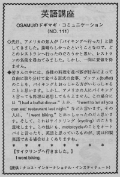

サイクリングへ行きました。
The other day an American friend said, I went biking. It was nice. So Osamu wondered which restaurant he had gone to. So he asked what was the name of the restaurant but he couldn’t get an answer.
先日、アメリカの知人が「バイキングへ行った」と話しかけてきました。素晴しかったということなので、どこのレストランへ行ったのだろうかと思い、レストランの名前を尋ねてみました。しかし、一向に要領を得ません。
皆さんの中には、各種の料理を並べ客が好みによって自由に取り分けて食べる形式の食事、ブッフェ（buffet）のことを、バイキングとおっしゃる方がいらしゃることと思います。しかし、アメリカの人にバイキングと言っても料理は連想してもらえません。この場合には、I had a buffet dinner. とか、I went to ‘an all you can eat’ restaurant last night. などと言います。その人は、I went biking. とおっしゃったのだと思います。そして、これはサイクリング（cycling） のことを意味します。この他にも、motorcycle のことをオートバイと言ったり、英語と思っているものが、実は和製英語である場合はよくありますね。
サイクリングへ行きました。
I went biking.

| © 1995-2013 NACOS International Institute. All Rights Reserved. |